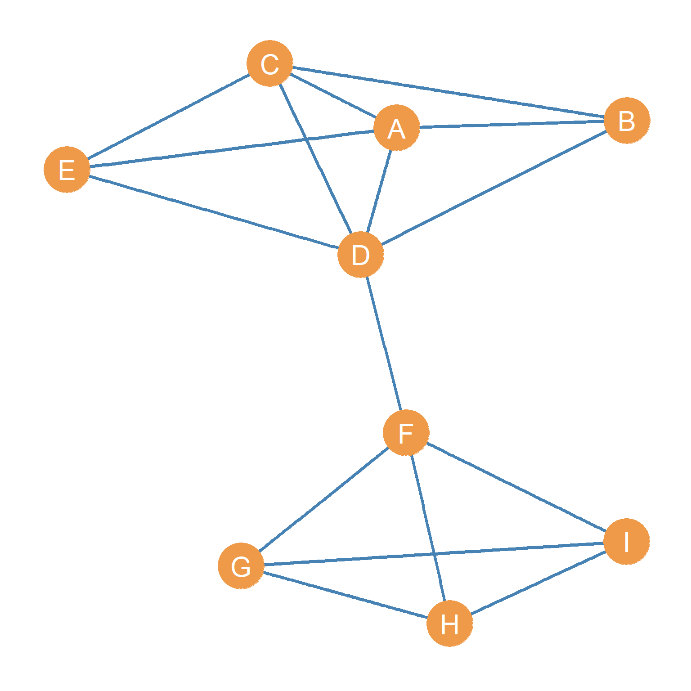
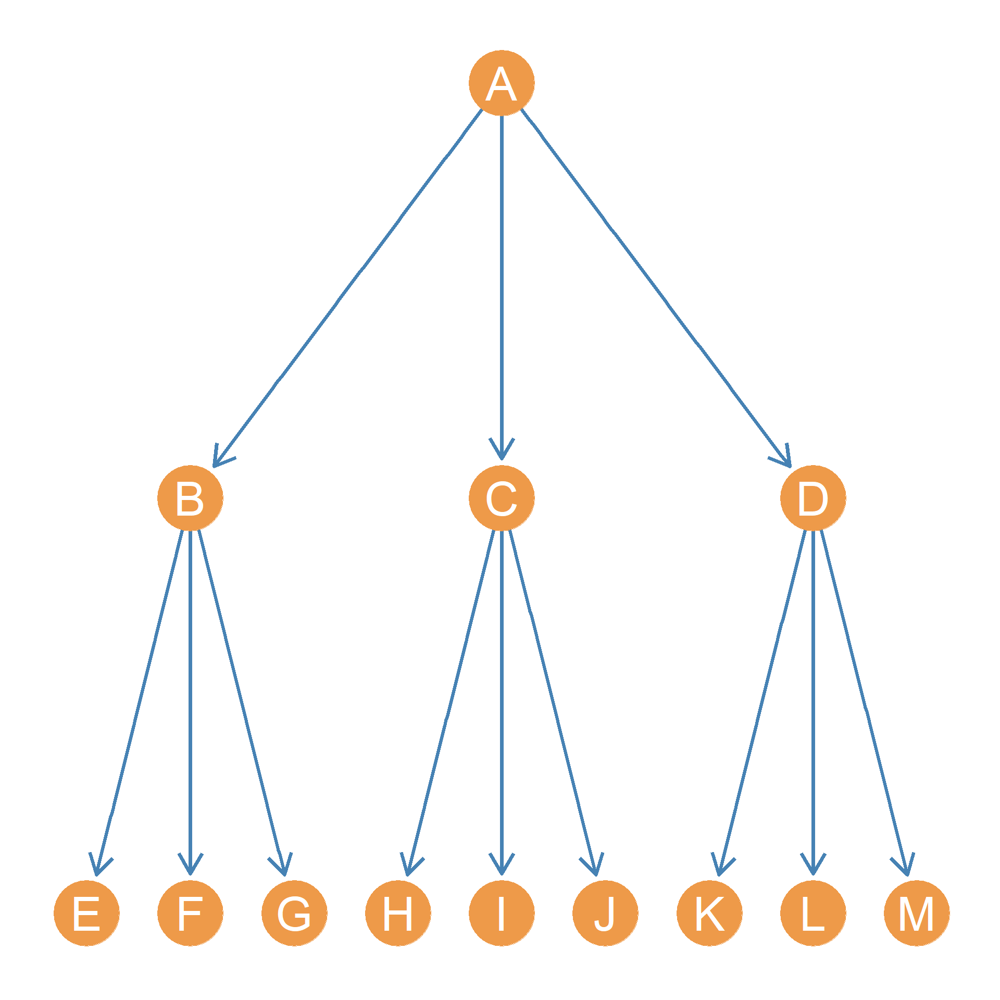

5 Types of Ties and Their Graphs
5.1 Symmetric Ties and Undirected Graphs
Nodes and edges are indeed the building blocks of a graph. However, types of relationships that the edges represent can change both how we understand the network conceptually and also what mathematical techniques we can apply to the graph when we compute graph metrics (the subject of a future lesson). The basic idea is that when we do network analysis, we want to map our understanding of the nature of the social relationships we are studying to the types of graphs we use to represent the network formed by the concatenation of those relationships.
Let us assume that Figure 5.1 represents a network of people who spend time together. One way of building this network would be to ask people on your dorm room floor who are the people that they spend some amount of time (e.g., more than an hour a week) hanging out with. By definition the relation “spending time together” lacks any inherent directionality. Mutuality (or reciprocity) is built in by construction. It would be nonsensical for a person (say A) to claim that they spend time with another person (say B) and for B to say that they do not spend time with A. In social network analysis these types of ties are called symmetric ties.
Accordingly, two people being in the same place at the same time (co-location), even if they do not one another, is an example of a symmetric tie. You also have the symmetric tie “being in the same class as” every other student that is also taking your Social Networks seminar this term. Note that, in this sense, all co-memberships (e.g., being in the same club or organization or being part of the same family) create symmetric ties among all actors involved (we will revisit this topic when talking about two-mode networks in another lesson). If I am a member of your family, you are also my family member; if we are both members of the soccer club, we are considered teammates. Social networks composed of symmetric ties are represented using undirected graphs like the one shown in Figure 5.1.
Networks composed of symmetric ties have some interesting properties. If we know that the relationship (R) linking two nodes A and B is symmetric, then only a single edge exists that links them, and it does not matter whether we call this edge AB or BA. The order does not matter. In this way, we can formally define as symmetric tie as one that lacks directionality; if a tie is symmetric, then if we know that A is related to B (the AB edge is part of the edge set of the graph), then we know by necessity that B is related to A.
Can you think of other examples of symmetric ties? Is friendship, as culturally defined in the contemporary world, a symmetric tie?
5.2 Asymmetric Ties and Directed Graphs
In contrast to spending time together, being members of the same family, or being in the same place at the same time, some social ties allow for inherent directionality. Edges in these graphs are are called asymmetric ties. That is, one member of the pair can claim to have a particular type of social relationship with the other, but it is possible (although not necessary) that the other person fails to have the same relationship with the first.
Helping or social support relations, are like this. For instance, you can help someone with their homework, or given them personal advice, but this does not necessarily mean that that person will return the favor. They may, or they may not. The point is that, in contrast to symmetric tie, mutuality or reciprocity is not built in by definition, but must happen as an empirical event in the world. We need to ask the other person to find out (or check their email logs). Can you think of other examples of asymmetric social ties?

Reciprocity is an important concept in social network analysis. Some have said it is perhaps the most important concept for understanding human society (Gouldner 1960), which may be a bit of an exaggeration. Only asymmetric ties may have the property of being non-reciprocal or having more or less reciprocity. If I think you are my friend, I very much hope that you also think you are my friend. That said, sociologists have found that in many natural social settings this is not the case. Sometimes people think they are friends with others, but those other people disagree (Carley and Krackhardt 1996). For this reason, sociologists typically ask: if I do you a favor, would you do me a favor in the future? Additionally, sociologists often ask: if I treat you with respect, will you also treat me with respect? If I text you, will you text me back? If this is true, we have a level of reciprocity in our relationship.
For some ties, such advice or support, or friendship relations, reciprocity is all or none; it either exists or it does not. For instance, the friendship offer you extend to someone may be reciprocated (or not). In the same way, you can like someone and they may like you back (or not), like the notes you passed around in middle school. For other ties, such as communication ties (e.g., those defined by the amount of texting, or calling), reciprocity is a matter of degree, there may be more or less. For instance, you can text someone 10 times a day, but they may text you back only half of those instances. In all cases, reciprocity is at a maximum when the content of the relationship is equally exchanged between actors.
Can you think of relationships in your life characterized by more or less reciprocity?
Just like symmetric ties are represented using a particular type of graph (namely, an undirected graph), social networks composed of asymmetric ties are best represented by a type of graph called a directed graph.1 Figure 5.2 shows the point and line diagram picture of a directed graph. What were simple lines for in the undirected graph shown in Figure 5.1 have been replaced with arrows indicating directionality. A node sends a relationship to the node that the arrow points to. Up to two directed arrows may link nodes going both ways.
If Figure 5.2 were an advice network (Cross, Borgatti, and Parker 2001), on the other hand, we could say that H seeks advice from D, but D does not seek advice from H. This may be because D is higher in the office hierarchy or is more experienced than H, in which case lack of reciprocity may be indicative of an authority relationship between the two nodes.
In a directed graph, for every edge, there is a source node and a destination node. So in the case of “A helps B” the source node is A and the destination node is B. In the case of “B helps A” the source node is B and the destination node is A. This means that in a directed graph, in contrast to a undirected one, the order in which you list the nodes when you name the edges matters. Thus, the edge AB is a different one from the edge BA. For instance, the first one may exist but the second one may not exist.
One must always be careful when examining a directed network to make sure one properly understands the direction of the underlying social relationships!
5.2.1 Node Neighborhoods in Directed Graphs
Just like in undirected (simple) graphs, each node in a directed graph has a node neighborhood. However, because now each node can be the source or destination for a asymmetric edges, this means that we have to differentiate the neighborhood of a node depending on whether the node is the sender or the recipient of a given link.
So, we say that a node j is an an in-neighbor of a node i if there is a directed link with j as the source and i as the destination node. For instance, in Figure 5.2, E is an in-neighbor of C, because there’s a asymmetric edge with E as the source and C as the destination.
In the same way, we say that a node i is an out-neighbor of a node j if there is a directed link with i as the source and j as the destination. For instance, in Figure 5.2, F is an in-neighbor of G, because there’s a asymmetric edge with G as the source and F as the destination
For each node, the full set of in-neighbors forms the in-neighborhood of that node. This is written \(N^{in}(v)\), where \(v\) is the label corresponding to the node. For instance, in Figure 5.2, the node set \(N^{in}(D) = \{B, E, G\}\) is the in-neighborhood of node D.
In the same way, the full set of in-neighbors defines the out-neighborhood of that node. This is written \(N^{out}(v)\), where \(v\) is the label corresponding to the node. For instance, in Figure 5.2, the node set \(N^{out}(B) = \{A, C, D\}\) is the out-neighborhood of node B.
Note that typically, the set of in-neighbors and out-neighbors of a given node will not be exactly the same, and sometimes the two sets will be completely disjoint (they won’t share any members).
Nodes will only show up in both the in and out-neighborhood set when there are reciprocal or mutual ties between the nodes. For instance, in Figure 5.2, the out-neighborhood of node F is \(\{A\}\) and the in-neighborhood is \(\{A, G\}\). Here node A shows up in both the in and out-neighborhood sets because A has a reciprocal tie with F.
5.2.2 Node Degree in Directed Graphs
Because in a directed graph, each node has two distinct set of neighbors, we can compute two versions of degree for the same node.
in a directed graph, for any node i, we can count the number of edges that have a given node \(v\) as their destination node. This is also the cardinality of the in-neighborhood set of that node. This is called a node’s indegree and it is written \(k^{in}_i\), where i is the label corresponding to that node.
Additionally, in a directed graph, for any node i, we can count the number of edges that have a given node \(i\) as their source node. This is also the cardinality of the out-neighborhood set of that node. This is called that node’s outdegree and it is written as \(k^{out}_i\), , where i is the label corresponding to that node.
For instance, in Figure 5.2, \(k^{out}_B = 3\) and \(k^{in}_B = 2\). Node B has three outgoing ties (from nodes A, C, and D) and three incoming ties (from nodes A and D).
Can you calculate what the indegree and outdegree of node D in Figure 5.2 is?
The graph theoretic ideas of indegree and outdegree have clear sociological interpretations. In a social network, for instance, a node having a large outdegree could indicate a sociable person (a person that likes to connect with others), while having a large indegree can indicate a popular person (e.g., a person lots of other people want to be friends with).2
This means that in a directed graph, there will typically be three types of (non-isolate) nodes (Harary, Norman, and Cartwright 1965):
- First, there will be nodes that receive ties but don’t send them. These are called receivers (like node C in Figure 5.2). For receiver nodes \(k_{in} > 0\) and \(k_{out} = 0\).
- Second, there will be nodes that receive ties and also send out ties. These are called carriers (like nodes A and B in Figure 5.2. For carrier nodes, \(k_{in} > 0\) and \(k_{out} > 0\).
- Finally, there will be nodes that send ties but don’t receive them. These are called transmitters (like nodes E and G in Figure 5.2). For transmitter nodes, \(k_{in} = 0\) and \(k_{out} > 0\).
5.3 Anti-Symmetric Ties and Tree Graphs
There is a particular type of directed relationship that has the property of only going in one direction. These are called anti-symmetric ties. Like asymmetric ties, anti-symmetric ties have a directionality (and thus source and destination nodes), but reciprocity is forbidden by definition. That means that if A is anti-symmetrically connected to B, then B cannot send the same type of tie back to A (although B may be connected, and typically is, to A via some other type of tie in a different network).
A common example of anti-symmetric ties in political sociology are patron-client ties (Martin 2009). Patrons can have many clients, but it is impossible for client of a patron to also be a patron to the same person. Other types of anti-symmetric ties are hierarchical relations at work, and cross-generation links in families. Your boss is your boss, while you are not your boss’ boss. In armies and other command and control structures, giving orders to is an anti-symmetric relation. An officer who gives orders to another officer (and thus commands them) cannot by definition also receive orders from them. In the same way, your parents are your parents (but you can only be a son or daughter to your parents), and your grandparents are their parents, and so forth. “Being the parent of” thus counts as an anti-symmetric relation as we define here; it only goes way (from parents to children) but it cannot come back from children towards parents.

One feature of a network composed of only anti-symmetric relations is that its corresponding graph can always be drawn from top to bottom, starting (at the top) with the node that only sends but does receive any ties and ending (at the bottom) with nodes that only receive, but do not send, ties. This is called a tree graph and an example is shown in Figure 5.3. Your family tree is an example of a tree graph of anti-symmetric kin ties. For instance, A could be your grandmother, and B, C, and D could be her three daughters. If B was you mom, then you could be E (along with your siblings F and G) and your cousins H, I, J, K, L, M.
Teacher-student, coach-athlete, buyer-seller are all examples of anti-symmetric relationships that can be depicted as tree graphs. In a future lesson, we will see that it is possible to characterize the level of anti-symmetry we observe in a directed graph, to see how closely they approximate the pure tree structure.
In addition to kinship, authority relations are a common antisymmetric tie between people. Thus, Figure 5.3 could be a network in which the anti-symmetric links are directed “gives orders to” (in an army or an office) relations, where the source node directs commands toward the destination node. So A is the top boss and commands B, C, and D. Node B, in their turn, gives orders to E, who is at the lowest level of the hierarchy, not commanding anybody in turn.
References
Carley, Kathleen M, and David Krackhardt. 1996. “Cognitive Inconsistencies and Non-Symmetric Friendship.” Social Networks 18 (1): 1–27.
Cross, Rob, Stephen P Borgatti, and Andrew Parker. 2001. “Beyond Answers: Dimensions of the Advice Network.” Social Networks 23 (3): 215–35.
Gouldner, Alvin W. 1960. “The Norm of Reciprocity: A Preliminary Statement.” American Sociological Review, 161–78.
Harary, Frank, Robert Z Norman, and Dorwin Cartwright. 1965. Structural Models: An Introduction to the Theory of Directed Graphs. Wiley.
Martin, John Levi. 2009. Social Structures. Princeton University Press.